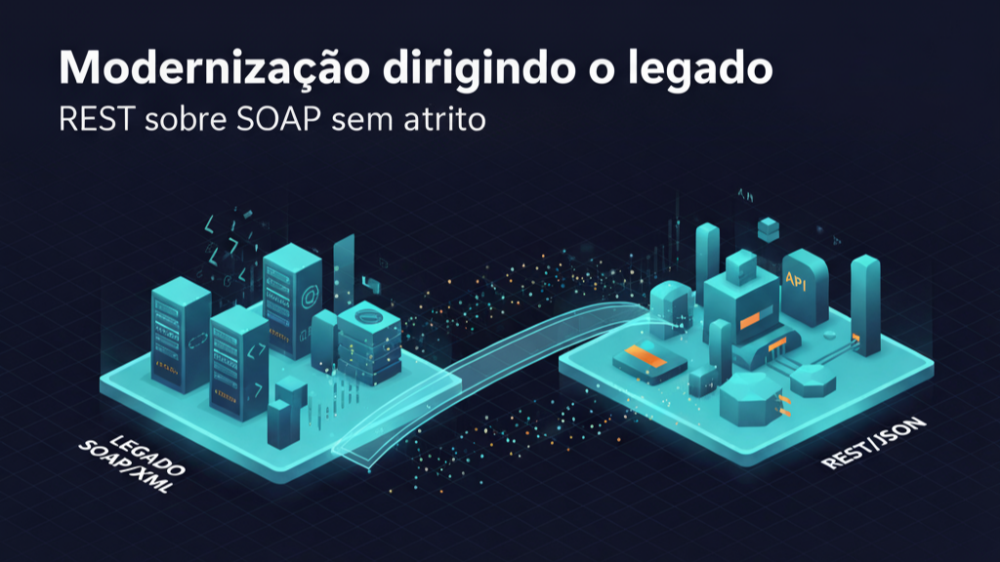

Modernização dirigindo o legado: REST sobre SOAP com baixo atrito

Figura — Modernização dirigindo o legado.
Por que alguns projetos de modernização deslancham enquanto outros ficam presos no atoleiro? Na maioria das vezes, não é por falta de tecnologia — é por falta de estratégia. Este é o relato de uma POC que optou por uma integração evolutiva: uma fachada REST consistente sobre um backend SOAP, com telemetria desde o início e alternância segura entre mock e serviço real.
Começamos com um desafio comum: expor uma API REST simples e clara sobre um serviço que “só fala SOAP”. A pergunta certa não era “como trocamos o legado?”, e sim “como conversamos melhor com ele?”. A resposta nasceu em três princípios práticos:
- Cautela estratégica: primeiro um mock controlado, depois o real. Montamos um serviço SOAP local, com contrato explícito (WSDL) e respostas previsíveis, para experimentar rápido, reduzir risco e ganhar confiança do time.
- Atrito mínimo: uma fachada REST que traduz intenções do negócio em chamadas ao serviço legado, sem inventar moda. O objetivo não era mudar o backend; era deixar o frontend e os consumidores mais livres.
- Observabilidade desde o dia zero: logs claros, testes fumegando (smoke tests) e um botão para ligar/desligar o mock. Sem “caixa preta”.
O roteiro foi simples e eficaz. Em poucas horas, a ponte estava de pé: um mock SOAP local respondendo “OK”, uma camada REST que fala a língua dos clientes e um mecanismo de orquestração que sobe, testa e derruba tudo com um comando. Ajustes cirúrgicos — como tratar cabeçalhos HTTP e usar roteamento em ponte — eliminaram erros 500 e estabilizaram o tráfego. Quando o primeiro GET a um cliente de exemplo voltou com 200 OK e um JSON limpo, sabíamos que tínhamos algo valioso: o legado continuava onde sempre esteve, mas a conversa com ele ficou muito melhor.
O que fez diferença não foram buzzwords — foram escolhas de engenharia com impacto estratégico:
- Entregas incrementais: a POC foi pensada para virar produto sem retrabalho. Cada passo agrega valor por si só, com um caminho claro de evolução.
- Contratos na frente: REST como porta de entrada e documentação viva; o legado permanece protegido por trás da fachada.
- Alternativas reversíveis: um “toggle” que permite trocar o mock pelo backend real em segundos. Sem cerimônia, sem intervenção heróica.
- Disciplina de simplicidade: menos acoplamento, mais clareza. O sistema que já funciona não precisa ser reescrito para que o restante avance.
O sinal de maturidade apareceu nos detalhes: tratamos cabeçalhos e roteamento com cuidado (removendo variáveis de caminho do contexto HTTP e habilitando a ponte do endpoint), aceitamos que o XML do mundo legado pode continuar existindo e deixamos o JSON nascer somente na borda onde faz sentido. Em outras palavras: respeitamos a conversa de cada lado.
Por que isso importa? Porque modernização não é um evento, é uma trajetória. Quando você cria uma ponte robusta e fácil de manter, abre espaço para que as equipes entreguem valor sem esperar o “projeto grande” terminar. Dá para conectar produtos, testar hipóteses e capturar resultados hoje — enquanto o plano de longo prazo segue em frente.
O que aprendemos nesta POC
- Modernizar é reduzir atrito, não aumentar complexidade.
- Mock não é gambiarra: é um acelerador estratégico de entendimento e qualidade.
- Observabilidade é um requisito de negócio, não apenas técnico.
- O melhor legado é aquele que continua útil, mas menos invasivo.
Se você está diante de um sistema “que só fala SOAP”, a tentação de reescrever tudo pode ser grande. Mas às vezes o caminho mais inteligente é construir uma ponte — rápida, observável e reversível. Foi isso que fizemos aqui. E funcionou.
Próximos passos
Transformar a POC em trilha de modernização: contratos evolutivos, métricas de uso, e pequenas iterações que não param o negócio. Modernização com menos teoria e mais entrega.
Quer trocar ideias sobre como adaptar esse desenho à sua realidade? Vamos conversar.
Resumo
- Objetivo: entregar uma fachada REST estável sobre um backend SOAP, com mock local para acelerar testes e alternância segura para o serviço real.
- Abordagem: integração evolutiva, contratos na frente e observabilidade desde o dia zero; ajustes finos em headers e roteamento para reduzir atrito.
- Resultado: respostas 200 consistentes em JSON, execução automatizada (subir/testar/derrubar) e caminho claro para evoluir sem reescrever o legado.
- Aprendizado: modernizar é construir pontes reversíveis e medíveis — menos atrito, mais entrega.
Hashtags: #ModernizaçãoDeSistemas #ArquiteturaDeSoftware #Integração #APIs #REST #SOAP #POC #Observabilidade #EngenhariaDeSoftware